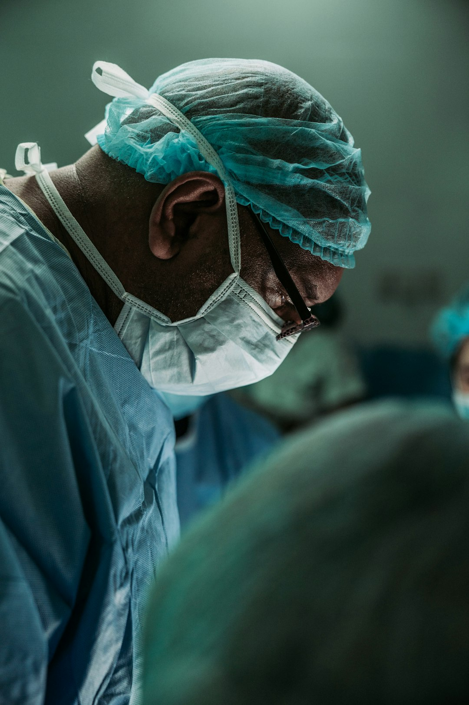

This allows patients to explore diverse healthcare options, from dental work to fertility treatments and hair restoration, while benefiting from cost-effective solutions. By partnering with accredited facilities that meet rigorous international standards, CureValue ensures that patients receive the highest level of care. I still remember a friend's glowing account of her experience abroad: “It wasn't just the cost savings.
The Appeal of Medical Tourism: Affordability, Accessibility, and Quality CareOne of the biggest drivers of medical tourism is cost. Patients often return home not only healthier but also enriched by the cultural experiences they gain during their treatment journey.
CureValue collaborates with leading dental clinics in regions such as Mexico, South America, and Europe, where costs are significantly reduced while maintaining excellent care standards. By maintaining strong relationships with clinics and hospitals worldwide, CureValue ensures that patients receive care from trusted professionals who prioritize safety, transparency, and exceptional outcomes.
After researching, he traveled to Hungary, where he received the same procedure for $5,000. “The care was excellent, and I even had time to explore Budapest,” he shared. Procedures That Draw Travelers: From Affordable Dental Implants to IVF TreatmentsMedical tourism caters to a variety of needs. Affordable dental implants abroad are particularly beneficial for individuals seeking durable and high-quality solutions to dental issues.
Affordable dental implants abroad are particularly appealing to those looking for long-term solutions without the financial strain of domestic prices. When talking about affordable dental implants abroad, patients often find the cost of similar treatments in the United States to be prohibitive.
The Impact of Medical Tourism on Global Wellness
Dental crowns and implants are essential for restoring oral health and enhancing self-confidence. Long wait times in the US for non-emergency procedures push patients to seek quicker solutions overseas. By choosing CureValue's network, patients are assured of receiving care in clinics that prioritize safety and exceptional outcomes. Medical tourism continues to grow as patients seek alternatives to high-priced domestic treatments. International clinics offer treatments that integrate advanced materials and technologies, ensuring outcomes that are both functional and visually appealing.
With the rising demand for fertility treatments, many couples look to international destinations for effective yet affordable solutions. In the United States, such procedures are often costly and considered elective, meaning they are not covered by insurance. Global accreditation organizations are raising standards, ensuring safety and quality across borders. From initial consultations to post-treatment care, every step is designed to provide transparency, efficiency, and peace of mind.
CureValue prioritizes patient safety and quality assurance at every stage of the medical tourism process. By offering a seamless and reliable process, CureValue combines world-class care with affordability, making medical tourism an appealing option for patients looking to improve their health and well-being. Legal and insurance implications should also be considered, as some procedures may not be covered by insurance or recognized legally in the patient's home country.
For example, US patients often find treatments like affordable dental implants abroad or IVF treatment in Mexico or South America to be practical alternatives. Medical tourism offers a unique blend of affordability, quality, and adventure.
Accessing High-Quality Care at Lower Costs
CureValue's commitment to excellence is reflected in its dedication to offering a broad range of services. Similarly, hair transplant clinics for Americans provide a practical solution for restoring confidence while remaining within budget. Medical tourism has become a prominent choice for individuals seeking cost-effective, high-quality healthcare outside their home country.
Real-Life Stories: How Medical Tourism Changed LivesJohn, a 52-year-old from Texas, needed dental implants but was shocked by the $20,000 estimate. CureValue is dedicated to connecting patients with trusted global healthcare providers, enabling them to access advanced medical treatments at significantly lower costs.

Choosing the Best Treatments Worldwide
From the initial consultation to post-treatment follow-ups, every aspect of the experience is designed to provide transparency, comfort, and peace of mind. Europe and Turkey are popular for hair transplant clinics for Americans and dental procedures. The success of CureValue lies in its dedication to connecting patients with the most suitable healthcare providers for their specific needs.
By traveling to reputable international clinics, patients can access advanced hair restoration techniques performed by specialists with extensive experience. These procedures combine expert care with significant financial savings, redefining healthcare for many.
These opportunities are further enhanced by the chance to experience new cultures and destinations, making the journey a holistic experience that blends medical care with personal exploration. This approach combines advanced medical care with the opportunity to explore new destinations, creating a seamless experience that prioritizes both patient outcomes and affordability.
Why Patients Seek International Treatments
Mexico is a go-to for IVF treatment, dental crowns, and hair transplants, offering state-of-the-art clinics just a short flight away. Through a commitment to quality, safety, and patient satisfaction, CureValue has established itself as a trusted partner in the field of medical tourism. Fertility treatments, often out of reach for many, are accessible and affordable in countries like Mexico.
These clinics are equipped with cutting-edge technology and staffed by experienced medical professionals who create personalized care plans for each patient. This is particularly relevant for those pursuing specialized treatments such as IVF, hair transplants, or dental implants.
Medical tourism offers a practical alternative to the high costs and limited access of domestic healthcare. Beyond cost, accessibility is key.
This is the promise of medical tourism, a growing phenomenon reshaping how we think about healthcare.
About dentist
Health care occupations caring for the mouth and teeth
In China as well as France, the first people to perform dentistry were barbers. They have been categorized into 2 distinct groups: guild of barbers and lay barbers. The first group, the Guild of Barbers, was created to distinguish more educated and qualified dental surgeons from lay barbers. Guild barbers were trained to do complex surgeries. The second group, the lay barbers, were qualified to perform regular hygienic services such as shaving and tooth extraction as well as basic surgery. However, in 1400, France made decrees prohibiting lay barbers from practicing all types of surgery. In Germany as well as France from 1530 to 1575 publications completely devoted to dentistry were being published. Ambroise Paré, often known as the Father of Surgery, published his own work about the proper maintenance and treatment of teeth. Ambroise Paré was a French barber surgeon who performed dental care for multiple French monarchs. He is often credited with having raised the status of barber surgeons.[1][2]
Pierre Fauchard of France is often referred to as the "father of modern dentistry" because in 1728 he was the first to publish a scientific textbook on the techniques and practices of dentistry.[3] Over time, trained dentists immigrated from Europe to the Americas to practice dentistry, and by 1760, America had its own native born practicing dentists. Newspapers were used at the time to advertise and promote dental services. In America from 1768 to 1770 the first application of dentistry to verify forensic cases was being pioneered; this was called forensic dentistry. With the rise of dentists, there was also the rise of new methods to improve the quality of dentistry. These new methods included the spinning wheel to rotate a drill and chairs made specifically for dental patients.[4]
In the 1840s, the world's first dental school and national dental organization were established. Along with the first dental school came the establishment of the Doctor of Dental Surgery degree, often referred to as a DDS degree. In response to the rise in new dentists as well as dentistry techniques, the first dental practice act was established to regulate dentistry. In the United States, the First Dental Practice Act required dentists to pass each specific state medical board exam in order to practice dentistry in that particular state. However, because the dental act was rarely enforced, some dentists did not obey the act. From 1846 to 1855, new dental techniques were being invented such as the use of ester anesthesia for surgery, and the cohesive gold foil method which enabled gold to be applied to a cavity. The American Dental Association was established in 1859 after a meeting with 26 dentists. Around 1867, the first university-associated dental school was established, Harvard Dental School. Lucy Hobbs Taylor was the first woman to earn a dental degree.
In the 1880s, tube toothpaste was created which replaced the original forms of powder or liquid toothpaste. New dental boards, such as the National Association of Dental Examiners, were created to establish standards and uniformity among dentists.[4] In 1887, the first dental laboratory was established; dental laboratories are used to create dentures and crowns that are specific to each patient.[5] In 1895, the dental X-ray was discovered by a German physicist, Wilhelm Röntgen.[6]
In the 20th century, new dental techniques and technology were invented such as the porcelain crowns (1903), Novocain (a local anesthetic) 1905, precision cast fillings (1907), nylon toothbrushes (1938), water fluoridation (1945), fluoride toothpaste (1950), air driven dental tools (1957), lasers (1960), electric toothbrushes (1960), and home tooth bleaching kits (1989) were invented. Inventions such as the air driven dental tools ushered in a new high-speed dentistry.[4][7]
By nature of their general training, a licensed dentist can carry out most dental treatments such as restorative (dental restorations, crowns, bridges), orthodontics (braces), prosthodontic (dentures, crown/bridge), endodontic (root canal) therapy, periodontal (gum) therapy, and oral surgery (extraction of teeth), as well as performing examinations, taking radiographs (x-rays) and diagnosis. Additionally, dentists can further engage in oral surgery procedures such as dental implant placement. Dentists can also prescribe medications such as antibiotics, fluorides, pain killers, local anesthetics, sedatives/hypnotics and any other medications that serve in the treatment of the various conditions that arise in the head and neck.
All DDS and DMD degree holders are legally qualified to perform a number of more complex procedures such as gingival grafts, bone grafting, sinus lifts, and implants, as well as a range of more invasive oral and maxillofacial surgery procedures, though many choose to pursue residencies or other post-doctoral education to augment their abilities. A few select procedures, such as the administration of General anesthesia, legally require postdoctoral training in the US. While many oral diseases are unique and self-limiting, poor conditions in the oral cavity can lead to poor general health and vice versa; notably, there is a significant link between periodontal, cardiovascular, and endocrine diseases.[8][9] Conditions in the oral cavity may also be indicative of other systemic diseases such as osteoporosis, diabetes, AIDS, and various blood diseases, including malignancies and lymphoma. Dentists can also prescribe medicines.[10]
Several studies have suggested that dentists and dental students are at high risk of burnout. During burnout, dentists experience exhaustion, alienate from work and perform less efficiently.[11] A systemic study identified risk factors associated with this condition such as practitioner's young age, personality type, gender, the status of education, high job strain, working hours, and the burden of clinical degrees requisites. The authors of this study concluded that intervention programs at an early stage during the undergraduate level may provide practitioners with a good strategy to prepare for and cope with this condition.[12]
Depending on the country, all dentists are required to register with their national or local health board, regulators, and professional indemnity insurance, in order to practice dentistry. In the UK, dentists are required to register with the General Dental Council. In Australia, it is the Dental Board of Australia, while in the United States, dentists are registered according to the individual state board. The main role of a dental regulator is to protect the public by ensuring only qualified dental practitioners are registered, handle any complaints or misconduct, and develop national guidelines and standards for dental practitioners to follow.[13]
For many countries, after satisfactory completion of post-graduate training, dental specialists are required to join a specialist board or list, in order to use the title 'specialist'.
In the US, dental specialties are recognized by the American Dental Association (ADA) or the American Board of Dental Specialties (ABDS)[14] Currently, the ADA lists twelve dental specialties, who are recognized by the National Commission on Recognition of Dental Specialties and Certifying Boards,[15] while the ABDS recognizes four dental specialty boards.[16]
Dental anesthesiology[17] – The study and administration of general anesthesia, sedation, local anesthesia and advanced methods of pain control. Recognized by both ADA and ABDS.
Oral Surgery. A recognized specialty in Europe and Australia. A specialty devoted to surgery within the oral cavity. Mainly the extraction of teeth, the exposure of teeth, treatment of cystic lesions, and treatment of patients with medical complicating factors.
Oral medicine - the discipline of dentistry concerned with the oral health care of medically complex patients – including the diagnosis and management of medical conditions that affect the oral and maxillofacial region. Recognized by both ADA and ABDS.
Orofacial pain - the specialty of dentistry that encompasses the diagnosis, management, and treatment of pain disorders of the jaw, mouth, face, and associated regions. Recognized by both ADA and ABDS.
Periodontics – Study and treatment of diseases of the gums (non-surgical and surgical) as well as placement and maintenance of dental implants
Pediatric dentistry (formerly pedodontics) – Dentistry for children. Teeth, bones, and jaw continually grow in children and certain dental issues in children require specific attention.
Prosthodontics – Dentures, bridges and dental implants (restoring/placing). Some prosthodontists further their training in "oral and maxillofacial prosthodontics", which is the discipline concerned with the replacement of missing facial structures, such as ears, eyes, noses, etc.
Specialists in these fields are designated "registrable" (in the United States, "board eligible") and warrant exclusive titles such as dentist anesthesiologist, orthodontist, oral and maxillofacial surgeon, endodontist, pediatric dentist, periodontist, or prosthodontist upon satisfying certain local accreditation requirements (U.S., "Board Certified")
In the UK, the specialties are recognized by the General Dental Council (GDC). Currently the GDC lists 13 different dental specialties:[18]
Dental & maxillofacial radiology – This specialty includes any medical imaging used to supplement investigations with relevant information about the anatomy, function, and health of the teeth, jaws, and surrounding structures.
Dental public health – This is a non-clinical specialty that assesses the needs of dental health and explores the ways in which they can be met.
Endodontics – This specialty includes the aetiology, diagnosis, treatment options, and prevention of disease that affects the nerve tissue found inside a tooth, roots, and surrounding tissues.
Oral & Maxillofacial pathology – This is a clinical specialty that is undertaken by laboratory-based personnel. It assesses the changes in the tissues of the oral cavity, jaws, and salivary glands that are characteristic of disease to aid in coming to a diagnosis.
Restorative dentistry – This is based on three monospecialities. These are endodontics, periodontics and prosthodontics. Periodontists are dentists that specialize in preventing, diagnosing, and treating gum disease. Prosthodontists deal with missing teeth.
Oral medicine – This specialty deals with the diagnosis and non-surgical management of patients with disorders related to the oral and maxillofacial region.
Oral Microbiology – This clinical specialty involves diagnosing, reporting, and interpreting microbiological samples taken from mouth
Oral Surgery – This clinical specialty manages any abnormalities of the jaw and mouth that requires surgery
Orthodontics – This clinical specialty deals with correcting the irregularities of the teeth, jaw, and bite
Paediatric dentistry – This clinical specialty provides comprehensive oral health care for children from infants to adolescents including children with mental or physical impairments
Periodontics – This clinical specialty is involved in the diagnosis and treatment of gums
Prosthodontics – This clinical specialty deals with replacing missing teeth by using fixed or removable prosthesis such as implants, bridges, dentures
Special needs dentistry – This clinical specialty is trained to improve and manage the oral health of adults with disability inc physical, mental, medical, social, emotional, and learning impairments
European Union legislation recognizes two dental specialties: Oral and Maxillofacial Surgery (A degree in dentistry and medicine being compulsory)[19] and Orthodontics.[citation needed]